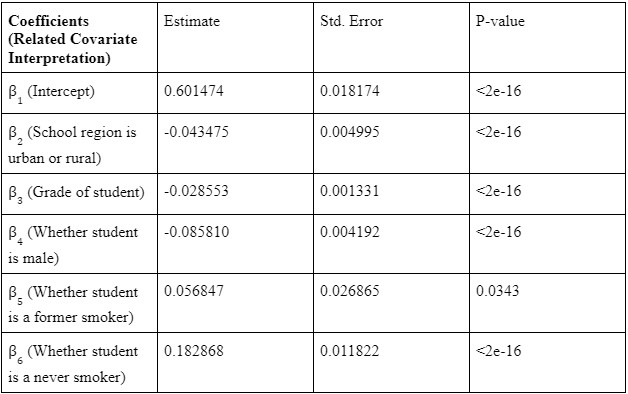

To answer this question, the Canadian Student Tobacco, Alcohol and Drugs Survey 2018/2019 is used.
Measuring risk perception can shed light on future e-cigarette use, as supported by Vogel et al. (2021),
according to whom higher risk perceptions are associated with a lower likelihood of e-cigarette use. By taking
into account the student’s current smoking status, their sex at birth, and their grade, we use regression analysis to explore this dataset.
The secondary data analysis for this study is based on CSTADS 2018/2019, sponsored by Health Canada and conducted by
Statistics Canada. The respondents are students in Canadian schools, from grades 7 to 12. The
total sample for this survey is 62,850 individuals. As outlined later, the students who responded
“I do not know” to the perceived risk of e-cigarette use have been excluded. Further, 79
observations were removed due to missing values for whether the school belonged to an urban or
rural region, and so the number of samples studied is 55,218.
Table 1 - Summary of Treatment Variable and Covariates
The linear regression used to find the causal relationship is given as follows:
Equation 1 - Linear Regression Model
These covariates as well as the treatment variable are explained in the following summary table:

Table 2 - Regression Summary
We can see this more easily in a comparitive graph between urban areas and rural areas as shown below:
Figure 1 - E-Cigarette Perception Trends
From this graph, we can see that a higher percentage of students perceive e-cigarette use as less risky in rural areas as compared to urban areas. Also, the perceived risk
tends to reduce as the student’s go to upper classes in their highschools.